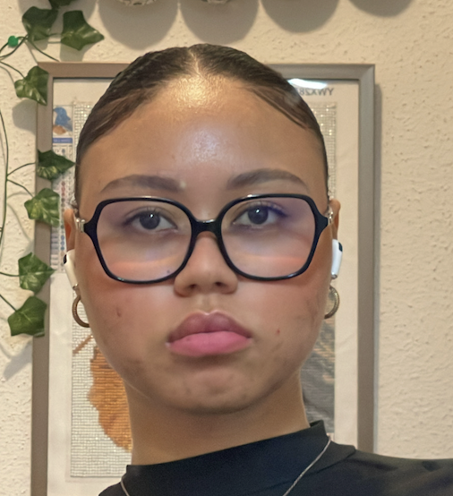

Bienvenue sur mon CV !

Je suis Nolwenn Le Rohellec, étudiante en première année de Master de Physique Appliquée et Ingénierie Physique, parcours Modélisation Mécanique pour l'énergie et l'environnement à la Faculté de Physique et Ingénierie.
À propos de moi
Passionnée par l'optimisation industrielle et les solutions durables, je suis actuellement étudiante en Master de Physique Appliquée et Ingénierie Physique à Strasbourg. Cependant, je ne me sens pas pleinement épanouie dans cette voie, qui ne correspond pas entièrement à mes aspirations. Mon véritable intérêt réside dans le domaine du génie industriel, où je pourrais allier ma passion pour l’optimisation des processus, la gestion de projets et l’innovation durable. Une réorientation vers ce master me permettrait de m’investir pleinement dans un domaine qui m’anime et de concrétiser mon ambition de contribuer activement à la transformation des industries de manière efficace et responsable.
Profil professionnel
Grâce à un parcours académique solide en physique appliquée, génie mécanique et techniques industrielles, enrichi par de nombreuses expériences en milieu industriel, je dispose des compétences nécessaires pour relever les défis du génie industriel. Mes expériences professionnelles en métrologie, qualité et optimisation des processus m'ont permis de développer des aptitudes techniques, organisationnelles, et une sensibilité particulière pour les problématiques de développement durable.
Projets professionnels
Mon projet professionnel s'oriente vers un poste de responsable optimisation industrielle ou d'ingénieur méthodes au sein d'une entreprise engagée dans la transition écologique.